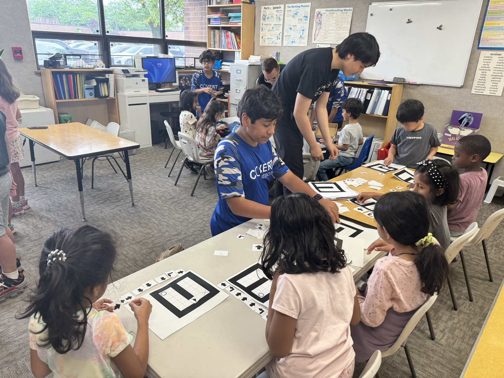
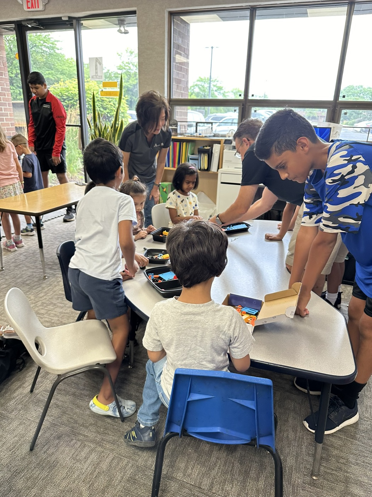

01 // MISSION
Operating Directive
We exist to turn students into engineers, programmers, and leaders — one robot at a time.
Covert Robotics is a student-led FIRST Tech Challenge team. Every season we take on a new game challenge: we design our robot in CAD, machine and assemble it by hand, write its software, and drive it head-to-head against teams from across the region.
Beyond the competition field, we practice gracious professionalism — mentoring younger teams, running STEM outreach in our community, and sharing everything we learn.
What is FIRST Tech Challenge?
FTC is a global robotics program where teams of students in grades 7–12 design, build, and program robots to compete in an alliance format against other teams. It's more than robots — teams manage budgets, document their engineering process, and do community outreach, all judged alongside on-field performance.
Learn more at firstinspires.org →01.B // FIELD OPS
Outreach
The mission doesn't stop at the practice field. We bring robots, code, and hands-on engineering to elementary classrooms and community events — recruiting the next generation of builders.

